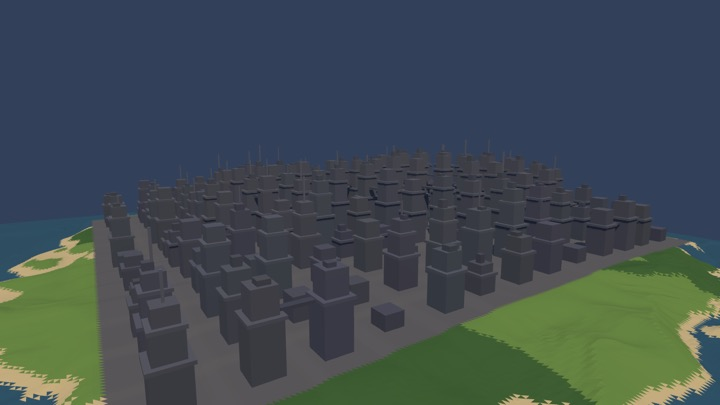
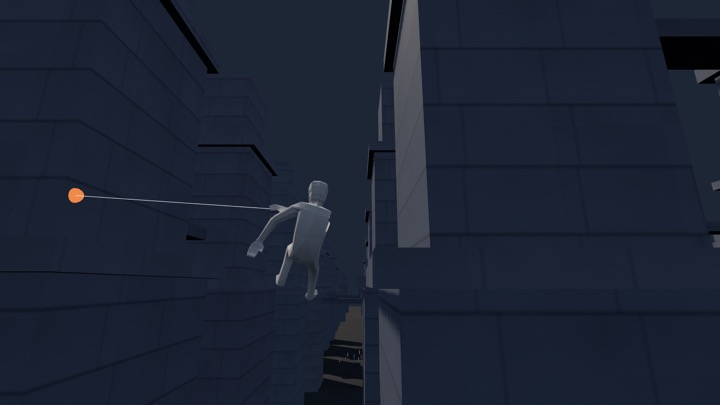
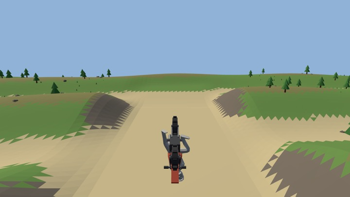
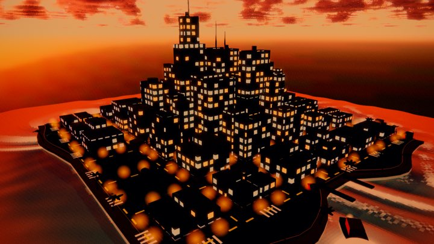
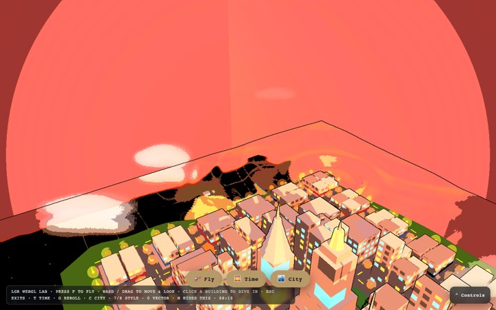
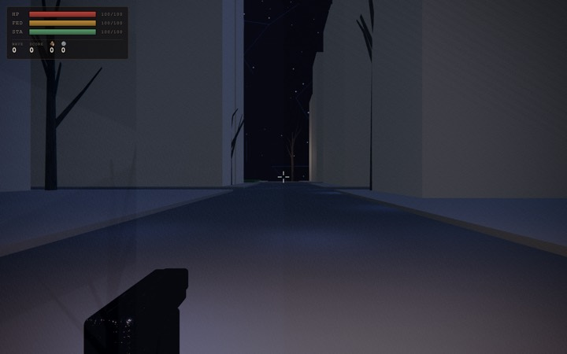
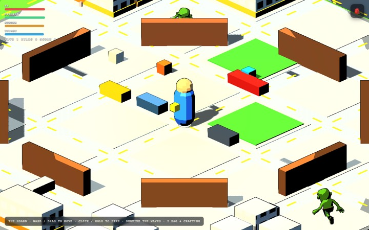
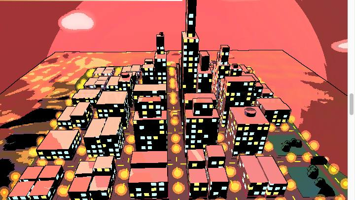
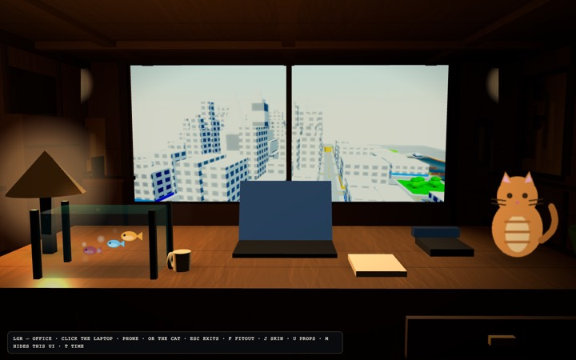
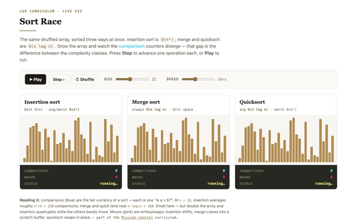

The engine's rooms and every body they can be entered in, as direct links. This is the workbench face — the tuning docks, the seeds and the physics dials. For the shipped products and the guided demos, use the main page.
← Live demos & shipped products
One island, five contiguous districts — city, woods, desert, lakes, sea — on a single heightfield. Walk it, swing it, or ride it. Full dock: seed, terrain, districts, and live physics.
Body Terrain Physics — live dials
The room the web-swinging character was built in: lock, web, ride the arc, launch off the top. Spider-crawl any facade and wall-jump off it.
Level Dials
A dirtbike over dunes solved from the bike's own physics — every crest launches at design speed, and the landing banks or scrubs your trick points.
Start Dials
The full engine in one place: fly, drive, walk, take a boat's helm, ride as a gull, then break the surface as a fish. Click a tower to dive through the glass.
EnterThe six bodies are picked from the dock inside the page — they are not URL state, so they are not links here.

The engine showcase: fly a craft over a procedural city, sweep day↔night, roll weather and seasons, switch style tiers and colour-grade looks.
Mode Terrain world & editor Look
Five arenas through one text-to-world interpreter, with the iso→first-person dive. Same seed across all five, so the worlds are comparable.
World
The original top-down wave-survival arena — flow-field horde AI, ballistics, decals — with F to dive into first person.
Arena Control arms
One continuous scroll-driven shot over the city, the art style morphing mid-flight, ending with the controls handed to you and a lit product stage.

The interior the city's tower-dive lands in, standalone: glass-city view, props, and the seated look-around.
Fitout
Zero-dependency CS visualizations — no WebGL, instant load, works on any phone.
Every chip is a URL. The rooms read their dials from the query string, so a setup you like is a
link you can keep or hand to someone. Inside the World Lab and the Swing Lab, the dock's
copy url button writes the current dials — world and physics — back out as one.
The World Lab's physics are live. rope, gravity, assist and
maxSpeed take effect on the next frame with no rebuild; the terrain dials
(seed, grade, street, cols, spacing,
woods) regenerate the island. With no parameters at all, every room is exactly its
shipped build.